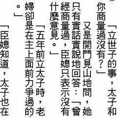

|
|
|
|
|
|
《支持好讀Ａ計劃》 2014/5/12 周劍輝
好讀Ｂ計劃 (2015/8/22)
感謝支持好讀Ａ計劃的讀友，您的贊助和鼓勵讓好讀能平穩的轉彎，讓我能對好讀的未來做更進一步的努力。
好讀的正業是書。回顧過去一年多，我的時間是比較多了，雖有心進行Ａ計劃，但不時看到想到改進好讀的點子，著力最多的仍是Ｂ(Book)計劃：
- 改善網頁。
- 廣徵掃描檔。目前手頭上已有超過二千本。
- 提高書的品質。每月舊書持續掃錯更新，並補上直式epub及mobi檔。每月放上的新書，大都是典藏版，製作者能提供掃描檔的比率也升高。
- 以前辦過分工輸入，未來的重點是分工校正。
好讀Ａ計劃 (2014/5/12)
簡單的說，好讀Ａ計劃就是好讀App計劃。若您知道什麼是App，您大概就知道好讀Ａ計劃的方向。若您不知道什麼是App，也沒關係，請看以下的說明。
計劃是新的展望，新的突破。計劃講究的是水到渠成。時候不到，寸步難行，不如不行或改行。能把握住新的展望，才可能有新的突破。
好讀怎麼來的
好讀自2001年創建迄今，一直是全球獨一無二的正體中文電子書網站，而不是眾多電子書網站的另一個。以好讀目前的規模，難怪不時會有人誤以為好讀是什麼公司，有什麼奧援，才能如此持續經營。其實都不是，好讀就是我，我就是好讀。
讀友中也有我的舊識或學生。在使用好讀很久之後，終於來信說原來好讀就是你啊！或者原來你就是Dr. Jou啊！讓我又好笑又開心。
電子書的應用包含三項：硬體、軟體和書，缺一不可。好讀的創建並非我的異想突發。2001年有硬體，就是當年最紅的PDA，這個名詞如今也隨Palm的沒落，被smartphone, tablet, 及ereader等名詞所取代。
2001年的PDA強調的是隨身小電腦助理，不是讀書機，也沒有什麼好用的中英文閱讀軟體。什麼是時候到了？什麼是新的突破？正巧我有一機在手，正巧我剛寫了一個Palm的程式，正巧我又愛看雜書，正巧我又有個空檔，在沒有什麼特別的計劃之下，就埋首為我自己量身撰寫了好讀的第一個版本。
2001年有了硬體，有了軟體，再來就是書，這是令人最失望的一環。沒想到由網路上隨手覓來的電子檔會有這麼多的錯別字，這麼多的缺漏，要怎麼讀啊？一是放棄，一是修改，我選擇了後者，才有今日的好讀。
為什麼要支持好讀Ａ計劃
與2001年相比，目前的各式硬體又多又好。站上，經眾讀友的努力，也有讀不完的好書。唯一多年未改的就是軟體。我感覺現在，時候又到了，應該可有新的突破。這回，好讀Ａ計劃，不是為我自己，而是為讀友量身規劃的。
好讀舊版的設計理念

2001年，好讀Palm的第一個版本：
- 中文直排，除了技術文件之外，中文是直著讀，才好讀。要好 (ˇ) 讀，才會好 (ˋ) 讀。
- 有章節，有目錄，且每章由新頁開始，有頁的觀念，才比較像實體書，才好讀。
- 全螢幕顯示。
- 觸控翻頁、跳章。
- 提供書架，可儲存由好讀網站下載的電子書，離線隨時隨地閱讀。
之後，寫了WinCE、PC及網頁版，就沒再改版過。目前流行的iOS及Android平台上的好讀閱讀軟體都不是我寫的，雖然也蒙撰寫的讀友大方，提供給我原始程式碼，但我已不再有時間修改。
好讀新版的設計理念
2001年的硬體不能上網，因而好讀舊版強調的是離線閱讀。好讀舊版也不能直接連上好讀網站。
這裡有個大問題：站上的書不斷在勘誤更新，當您要閱讀上個月或半年前下載的書時，可能站上已有品質更好的版本。您只得在閱讀前，先用瀏覽器上好讀網站，查看是否有新版。若有，重新下載。
好讀Ａ計劃：為各種作業平台，重新撰寫好讀軟體(App)。好讀軟體是閱讀器，也是瀏覽器，可以直接連上好讀網站。要看什麼書，隨時由站上下載。看完就可刪除，或由好讀軟體在一段時間後，自動刪除。好讀網站就是您的書架，您只需建愛看的書單，而不必在硬體上儲存一堆「過時」的書。
好讀一路走來
好讀這個分享平台，是要有人不斷的付出時間維護才能持續，那個人就是我。好讀的前三年，好讀是我的正業，我的大部份的時間全花在整理書上。這邊付出了時間，那邊就沒有時間工作了，生活要如何維持呢，何況我還有幾位「土地公」要奉養？說來不怕您笑，我是靠刷卡借貸和幫人寫點小程式維生。您想也知道，這樣的日子不是很好過，也維持不了幾年。那時不少人笑我傻，我是打落牙齒和血吞。當我再也撐不下去時，好讀也只好關站了。
或許好讀的命不該絕，2004年底，在我難以為繼之際，意外的有人邀我回美國工作，提供了我一條生路，也提供了好讀一條生路。好讀雖然因而降為我的副業，我只能付出一半的時間在好讀上，但好讀至少有了個存活的機會。
沒想到，兩份工作，這一路走來就近十年。如今回顧這十年，我還蠻佩服我自己的毅力，不但沒被打敗，正業（軟體研發）還順利完成了三項產品，副業（好讀）也日益茁壯。這裡要感激的是正業所給我的自由工作時間，要感謝的是多年來協助好讀成長的讀友，更要感謝的是我的老婆，沒有她的諒解和對好讀的支持，我早就放棄好讀，或另覓更高薪的工作去了。看我忙不過來，我的老婆也於去年起接手好讀專欄的網頁製作和修改。
該轉彎的時候到了
不久之前，被老友問及，還在忙什麼？我說一樣，一半時間寫程式，一半時間做好讀。他說什麼！好讀你還要花時間做嗎？我說是的。實際上，因為協助製書和勘誤的讀友越來越多，每個月我花在好讀上的時間，早就超過一半以上了。
每本書除了網頁要製作修改，放上之前，我還要用mPDB掃一遍除錯。有些讀友真仔細，提供的勘誤表好長一篇。有些勘誤表猜解精采，讓人讚歎。有些則不夠體貼，未列出足夠的相鄰字，要額外花比較多的時間才能找出應改的位置。另外，我也不能閉著眼睛全盤照改，每一項都要確認，有疑問的也要再查證。為了您閱讀時的賞心悅目，一篇難改的改下來，往往半天就去了。您想想一個月我能空出多少個半天呢？
好讀Ａ計劃是做還是不做？之前沒做，是時候不到，現在我覺得是做的時候了。
難處是誰來做？誰來主持？好讀目前也只有我會寫程式，所以只有由我先擇一作業系統平台，規劃撰寫，無法各作業系統平台同時進行。
可是在時間上我要怎麼分配呢？目前的二等份已夠我忙了，要改成三等份恐怕更困難，屆時說不定什麼都做不好。
徬徨歧途，怎麼辦？
我的人生哲學是該轉彎的時候就轉彎。命不是算出來的，時候不到，沒人能預知哪條路比較好。不好好走，好路也變成壞路。俗語說得好，天無絕人之路。只要好好走，時候到了，自然就會有新的路出現。
我支持好讀Ａ計劃
我的選擇是：放棄我的正業，支持好讀Ａ計劃。我會先選擇一個作業系統平台，開始規劃撰寫好讀Ａ計劃。
當然上台容易下台難，若有產品正在研發，我的正業很難說走人就走人。正巧上一項產品剛完成，是個下台最好的時機。此時不走，再想走就難了。
請您也支持好讀Ａ計劃
我的正業養活了好讀近十年。或許您要問：你不務正業之後，誰來養活好讀呢？還是我。與十年前相比，我目前的情況好多了，應該不用刷卡借貸，就能支持好讀Ａ計劃進行兩、三年。
您要再問：幾年之後呢？還是那句話，時候不到，沒人知道。但只要我好好做，屆時自然會有生路出現。
您又要再問：萬一你不小心掛了，好讀怎麼辦呢？還是那句話，時候不到，沒人知道。好讀若天命該絕，so be it，我已盡力了。但我想好讀是造福眾人的事業，好讀自有好讀的福氣，不用您我擔心。
好讀Ａ計劃的目的是讓讀友在各種作業系統平台上，都能更方便的享受閱讀的樂趣。讓喜歡閱讀的人隨時隨地有好書可讀，讓不再閱讀的人重拾閱讀的樂趣。站上的一本好書、一篇好文也許就能改變了某讀友的一生，不是值得一做的好事嗎？
人的大半生都在為自己和家人打拼。我是機緣巧合才創建出好讀這個平台，才能有這個機會為大家服務。現在為了讓好讀做得更好，我想好讀不應該只是我，好讀應該也是您。我想我應該分享一些我的「福分」給您，讓您也有機會為大家付出一點心力。
常聽您說感謝好讀，支持好讀做得更好。過去沒有什麼特別的機會請您效力，現在我想和您商量一下：好讀Ａ計劃需要購置開發工具、測試設備，和支付營運費用，可否請您具體的支持一下，至少贊助美金一百元，減輕好讀的負擔。
當然美金一百元是個不大不小的數目。為了好讀，我咬了無數次的牙，度了無數次的難關。若您有猶豫，容我再說一句，我只請您協助這一次。再難，您咬一次牙，就過了啊。
人生有再多的錢也帶不走。若美金一百元對您而言，僅是一個不足為道的數目，何不贊助更多呢？畢竟口頭感謝，口頭說支持的人居多，真的對好讀有助益，還是靠您了。
您的贊助令我安心，也讓我開心，感謝您的支持！讓好讀Ａ計劃能儘早開工，儘早完成，造福更多的人。
美金贊助，請按右側 Donate 按鈕
(可以直接使用信用卡，不用申請 Paypal 帳戶)
帳單地址(billing address)，Paypal 的預設格式是美國。若您的信用卡地址不是美國，請先選國家(country)，等幾秒，地址格式應自動改成正確的當地格式。若未改，重載網頁即可。
|
|
(Pei) (感謝好讀) 最近因為用螢幕看網路書籍太疲倦吃力，而決定下手買了電子閱讀器，但電子書的來源卻是另一個問題。輾轉得知好讀，真的只能用「相見恨晚」形容，每一本書的正確校對，遠遠勝過網路上參差不齊的品質！實在是佩服又感謝！由於我還是高中生，實在沒辦法一次贊助好讀，只能慢慢存錢再付諸行動。希望好讀可以運作下去，未來只要在我能幫助範圍內，我一定會幫忙的！再次謝謝好讀的存在！ (2014/9/11) (謝謝，不急)
(阿策) (有關贊助) 周先生你好！我是一位大學生，你的網站提供了我許多免費的資源，也提供了我在茫茫書海中一個閱讀名著的導引。近日打工有賺點錢準備考研究所，扣掉補習費還有些剩餘，想說有錢出錢有力出力，不知道能不能提供郵局劃撥的帳戶呢？ (2014/8/30) (謝謝，但沒有帳戶，不急)
(Lee Seung Ngai) I have been following and downloaded lots of books from haodoo in the last few years. You changed my reading style and help me to access many books which I have not known before. Though I don't exactly understand the Plan A you are working on but I really want to support your work and give you my token of thanks. (2014/8/30) (哈哈，感謝支持)
|
|
|
|
|
|
|
|
|
| 搜尋好讀 |
|
好讀第17年了。
有好讀真好，有你也真好。但不知遍及各地的你，究竟有多少。若你從未或很久沒贊助過好讀，請按這裡，贊助好讀美金或人民幣十元，讓我知道你存在。
11/25香港 Dennis C
幾年前由朋友介紹得悉好讀，多年來在旅途中它都帶給我很多樂趣。香港地方狹小，不少書都因地方問題而送人或丟棄，好讀卻帶給了我很多閲讀的方便、亦節省了儲存的位置。衷心多謝各位工作仝人！
11/19 美國紐約 June
發現好讀幾年了，但現在才發現這好讀留言板。抱歉呢，理應更早道謝。身在海外，要看一本中文書不是易事。書店售書種類少，價錢高；圖書館借書種類更少。幸好發現好讀網，可以一解書癮。衷心感謝所有有心人上載和校對。
11/17 大陸 Shirley
偶然發現好讀網這塊寶地真的很驚訝，網絡上有這樣安靜舒適的地方可以閱讀電子書，對我這種資金短缺的學生真的很意外很開心！
11/16 香港 chair chun wai
因為買了Kindle的緣故，所以才發現"好讀"這個地方。感謝"好讀"一直的更新和提供書本給大家。感謝感謝
11/15 香港 mike chan
我認識好讀是因爲kindle。那時中學買了kindle，需要找找電子書，因此在網上發現了好讀。對於繁體字kindle用家，這是個大福音！
11/13 大陸 BerthaR
今天因為Kindle的緣故找書，才發現好讀這個地方。感覺是一方淨土，公益地為書友們獲取知識省下了不少財力，節省了大家的時間：）目前我只是個高中生，提供的也只有十塊錢而已啦。十七年的好讀真是令人敬佩！希望你們知道我的感謝，還有知道更多人的感謝！
11/9 香港 MJ
從小喜愛看書，看書人也許都知道要管理保存書本是不容易的（尤其香港的地方空間更有限）。今年開始嘗試電子書，看看能否接受。因為好讀網的海量書本，小弟所喜愛的黃易＋衛斯理，還有準備開始看的金庸也不用愁了。感謝好讀！
>> 更多
|
|
|